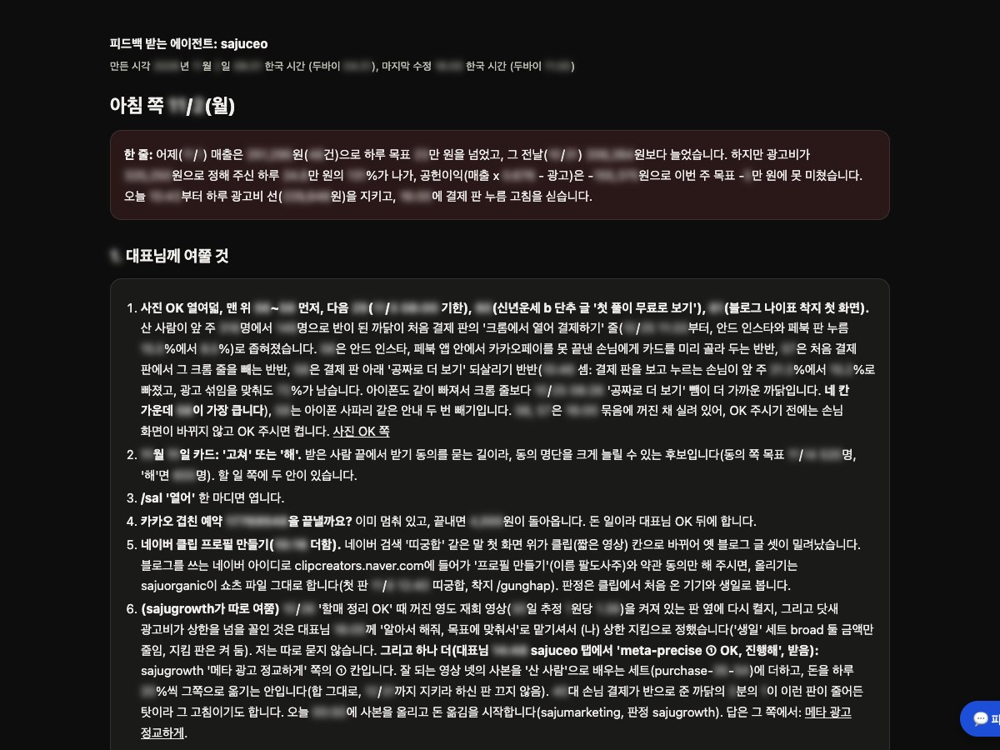
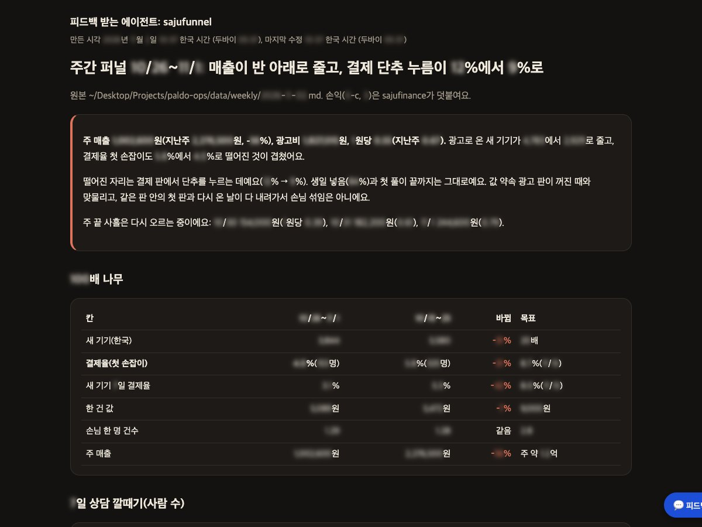
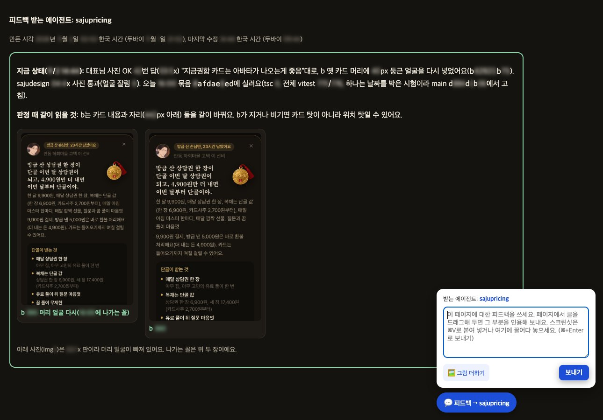

일하는 방식
작게 만들고, 숫자로 판정하고,
기록으로 쌓습니다.
디자인 리더의 일은 좋은 화면 하나보다, 좋은 화면이 계속 나오는 방식을 만드는 것이라고 생각합니다. 아래는 지금 제 스튜디오에서 실제로 돌리고 있는 방식이고, 큰 조직에서 팀을 이끌며 다듬어 온 방식입니다.
문제를 고르는 것부터 기록까지, 여섯 단계를 매주 돌립니다.
- 1
숫자 보기
주 매출을 새 방문, 결제율, 건당 금액, 1인당 구매 건수로 나눈 지표 나무와 단계별 퍼널에서 가장 크게 새는 곳을 고릅니다.
- 2
가설 적기
바꿀 것, 판정 지표, 가드레일, 판정 날짜, 중단 기준을 바꾸기 전에 변경 로그에 적습니다. 같은 자리에는 한 번에 하나만 둡니다.
- 3
직접 만들기
시안에서 멈추지 않고 Claude Code로 실제 동작하는 화면까지 만듭니다. 리뷰는 정지 화면이 아니라 손에 쥐어지는 화면으로 합니다.
- 4
화면으로 리뷰
360px와 390px 두 폭에서 캡처해 넘침과 줄바꿈을 봅니다. 돈이 걸린 화면은 제가 캡처를 보고 승인하고, 의견은 리뷰 페이지에 바로 남기면 그 화면을 만든 쪽에 전달됩니다.
- 5
A/B 테스트
기기를 둘로 나눠 같은 기간에 견주고, 판정 지표와 가드레일을 함께 봅니다. 표본이 작을 때는 모든 지표가 같은 쪽을 가리킬 때만 전체에 적용합니다.
- 6
판정과 기록
전체에 적용하거나 되돌리고, 매주 월요일 바꾼 것, 결과, 배운 것, 다음 할 일로 묶습니다. 기록이 쌓이면 다음 결정이 빨라집니다.
팀이 같은 기준으로 판단하도록, 원칙을 먼저 세웁니다.
AI의 행동은 승인 뒤에
AI가 대신 움직이는 일은 사용자가 확인한 뒤에만 하고, 모든 행동을 기록으로 남깁니다.
아부다비 정부 Anees디자인부터 출시와 운영까지, AI를 팀원처럼 씁니다.
제품은 Claude Code로 화면 설계부터 출시까지 직접 만듭니다. 운영은 역할을 나눠 받은 AI 에이전트 50여 개가 동시에 맡습니다. 우선순위를 정하는 에이전트, 배포 권한을 혼자 가진 에이전트, 재무, 데이터, 퍼널, 가격 에이전트가 각자 자리에서 일합니다.
사람이 정하는 것은 가격, 새 유료 채널, 예산 증액 세 가지입니다. 에이전트는 하루 광고 상한, 손실 상한, 예산 변동
디자이너 팀에도 같은 원리가 통한다고 봅니다. 역할, 권한, 판정 기준을 먼저 정하면 리뷰가 취향의 싸움이 아니라 기준의 대화가 되고, 반복되는 일은 AI에 맡기고 사람은 판단에 시간을 씁니다.
지금 쓰는 도구
- Claude Code
- 실제 앱 코드 위의 프로토타입
- 자체 A/B 테스트 배분과 판정
- 변경 로그
- 리뷰 페이지와 의견 전달 도구
에이전트는 리포트로 묻고, 저는 페이지 위에서 답합니다.
매일 아침 우선순위 에이전트가 어제의 숫자와 제가 정해야 할 것만 추린 아침 리포트를 보냅니다. 퍼널, 재무, 가격 에이전트는 주간 리포트를 보내고, 화면을 바꾸기 전에는 후보를 나란히 놓은 리뷰 페이지를 만듭니다.
모든 페이지 맨 위에는 어느 에이전트가 피드백을 기다리는지와 만든 시각, 고친 시각이 적혀 있습니다. 페이지 오른쪽 아래 상자에 의견을 쓰면 그 페이지를 만든 에이전트에게 그대로 전달되고, 페이지에서 고른 문장은 인용으로 함께 갑니다. 에이전트가 수십 개여도 어디에 답해야 하는지 헷갈리지 않게 한 장치입니다.



실제 리포트와 리뷰 페이지입니다. 숫자는 가렸습니다.
처음부터 세우는 일을 여러 번 했습니다.
아부다비 정부 DGE
정부 AI 제품 두 개의 경험 설계. Anees는 회의를 준비하고 기록해 결정과 할 일로 정리하고, 사용자가 승인한 뒤에만 후속 메일과 작업을 보내며 모든 행동을 기록합니다. Wakeel은 고위 의사결정자를 위한 의사결정 플랫폼입니다.
Humain, AI Product & Experience Lead
사우디 국가 AI 플랫폼 Humain One의 제품 비전과 경험 원칙을 세우고 리뷰 체계를 마련했습니다. AI가 처음인 사람이 실제 일을 에이전트에게 처음 맡기는 경험을 설계했습니다.
데브시스터즈, Group Director
VR 사업을 제안해 예산을 확보하고, 프로젝트, 엔지니어링, 아트, 마케팅 25명 팀을 꾸려 쿠키런 VR 게임을 Meta Quest Store에 출시했습니다. 회사의 첫 Meta 파트너십을 협상했습니다.
카카오IX 유럽 법인, Regional Director
카카오의 첫 유럽 법인을 세우고, 카카오프렌즈를 라이선스와 리테일 파트너십으로 유럽에 소개했습니다.
사우디아람코, UX Lead
전사 디자인 시스템과 UX 가이드라인을 만들어 여러 사업부에 적용했습니다. 사우디 여성의 첫 운전면허 취득을 돕는 디지털 여정 전체를 설계했습니다.
런던 AKQA, Razorfish
Nike(NRC, NTC), Volvo, Barclays, Virgin Atlantic, BNP Paribas Hello